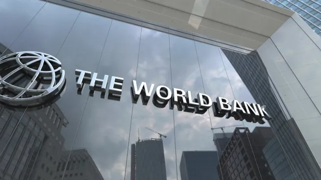
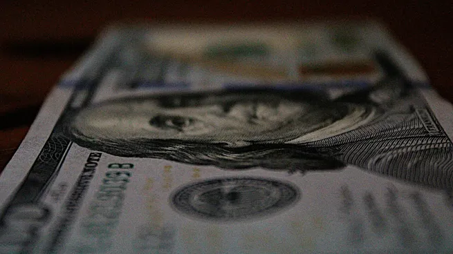
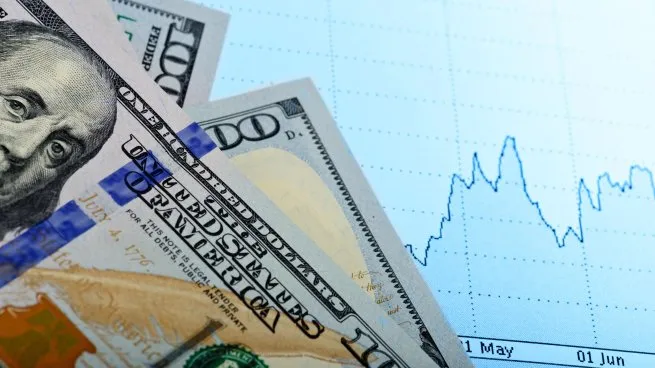

El Banco Mundial confirmó que trabaja con Argentina para brindarle una garantía de hasta u$s2.000 millones

El dólar blue subió y la brecha con el oficial tocó máximos de casi tres meses

El dólar bajó y regresó a los precios de noviembre tras una semana de pérdidas constantes

Dólar hoy y dólar blue hoy minuto a minuto: a cuánto opera este jueves 16 de abril